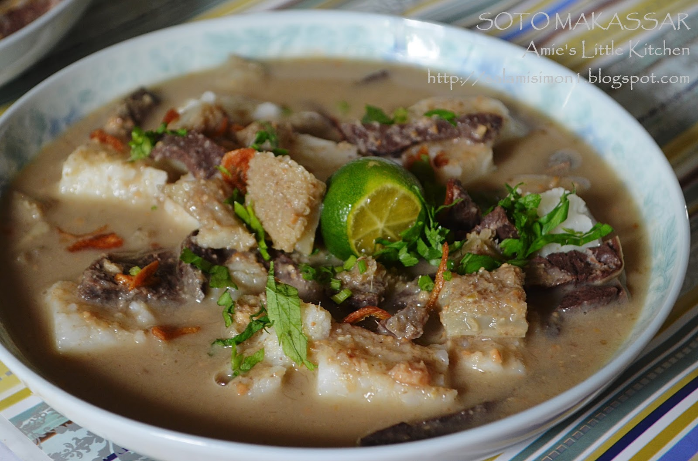

Coto Makassar

Image source: Amie's Little Kitchen
Description
Coto Makassar is a traditional Indonesian soup dish that originated in the city of Makassar in South Sulawesi, Indonesia. Coto Makassar is considered a traditional local dish and is typically found in street vendors, warungs, and in some restaurants that specialized in Makassar cuisine.
The dish is made with a broth that is seasoned with a combination of spices, such as garlic, shallot, ginger, and chili, which give it a rich and flavorful taste. It is typically made with beef or buffalo meat, but some variations use chicken or pork. The meat is cooked until tender in the broth and then served with a variety of toppings such as shredded cabbage, bean sprouts, and scallions. The dish is usually served with rice and sometimes also with lontong (compressed rice cake) or ketupat (boiled rice dumpling) on the side.
Ingredients and tool
- 1 kg beef or buffalo meat, cut into small pieces
- 2 liters of water
- 2 cloves of garlic, minced
- 2 shallots, minced
- 2 cm of ginger, minced
- 2 red chilies, minced
- Salt and sugar to taste
- Optional toppings: shredded cabbage, bean sprouts, scallions
- Rice or lontong (compressed rice cake) or ketupat (boiled rice dumpling) for serving
Steps
- In a large pot, bring the water to a boil.
- Add the beef or buffalo meat and let it cook for about 30 minutes or until the meat is tender.
- Remove the meat from the pot and set it aside.
- In the same pot, sauté garlic, shallot, ginger, and chilies until fragrant.
- Add the meat back into the pot, along with salt and sugar to taste.
- Simmer for another 20 minutes to let the flavors meld together.
- Serve the Coto Makassar in bowls and top with shredded cabbage, bean sprouts, and scallions.
- Serve with rice or lontong or ketupat on the side.
Note: This recipe is a simplified version, in traditional recipe they also use some other spices such as lemongrass, kaffir lime leaves, and tamarind paste. You can adjust the amount of spices to your preference and add more or less depending on how spicy you like your food.